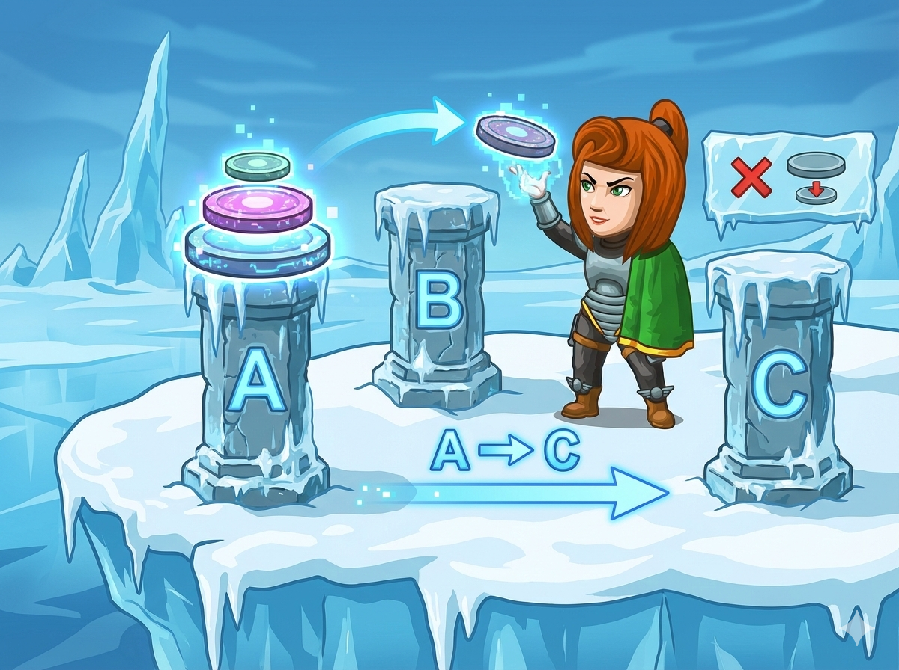

在冰川堡垒里有三根柱子：A、B、C。
A 柱上有 $n$ 个盘子（上小下大）。
任务： 把所有盘子从 A 移到 C。
规则：
1. 一次只能移动一个。
2. 大盘子永远不能压在小盘子上面。
你需要输出每一步的指令，例如：A -> C。
这是一个经典的 递归 (Recursion) 问题。
函数定义： void hanoi(int n, char a, char b, char c)。
参数分别代表：盘子数、起点柱、中转柱、终点柱。
递归出口： 当 n == 1 时，不需要副官，自己直接搬。
函数定义： def hanoi(n, a, b, c):
逻辑完全一致。注意 Python 的 print 格式化字符串 f"{a} -> {c}" 写起来很方便。
将大问题拆解为三个小步骤。
#include <iostream> using namespace std; // 定义递归函数 // n: 盘子数量 // A: 起点柱子, B: 中转柱子, C: 终点柱子 void hanoi(int n, char A, char B, char C) { // 递归出口：如果只有1个盘子 if (n == 1) { // 直接从起点搬到终点 cout << A << " -> " << C << endl; } else { // 1. 先把上面 n-1 个盘子，从 A 移到 B (借助 C) hanoi(n - 1, A, C, B); // 2. 把底下最大的盘子，从 A 移到 C cout << A << " -> " << C << endl; // 3. 最后把 B 上的 n-1 个盘子，从 B 移到 C (借助 A) hanoi(n - 1, B, A, C); } } int main() { int n; cin >> n; // 开始搬运，从 A 移到 C，B 是帮手 hanoi(n, 'A', 'B', 'C'); return 0; }
无函数脚本，利用递归函数解决问题。
# 定义递归函数 # n: 盘子数, a: 起点, b: 中转, c: 终点 def hanoi(n, a, b, c): # 递归出口：只有1个盘子 if n == 1: print(f"{a} -> {c}") else: # 1. 递归：把 n-1 个盘子从 a 移到 b (利用 c) hanoi(n - 1, a, c, b) # 2. 动作：把最大的盘子从 a 移到 c print(f"{a} -> {c}") # 3. 递归：把 n-1 个盘子从 b 移到 c (利用 a) hanoi(n - 1, b, a, c) # --- 主程序 --- n = int(input()) # 调用函数 hanoi(n, 'A', 'B', 'C')